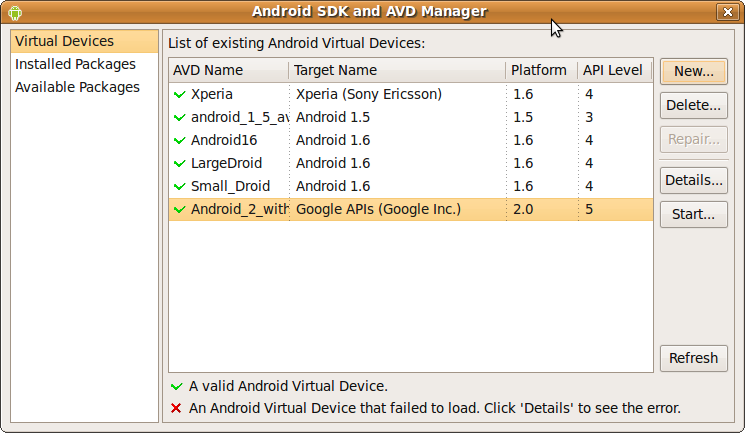
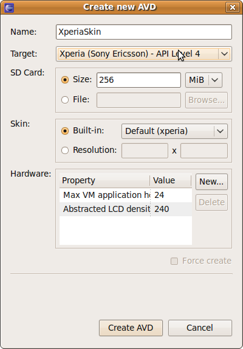
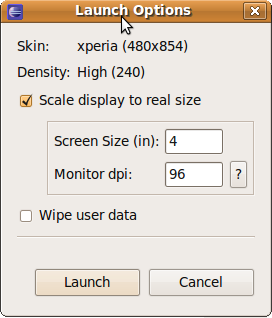

Start Eclipse, and click on the phone button, or run the Android Command
Click New, and fill out the fields. Note: The name of an Android Virtual Device can't contain any spaces, dashes or periods. Select Xperia as the target device. Once you are done, click "Create AVD".
Start the AVD you have created. This AVD requires a high resolution monitor, so if you do not have one, it is a good idea to scale the size down when starting it.
